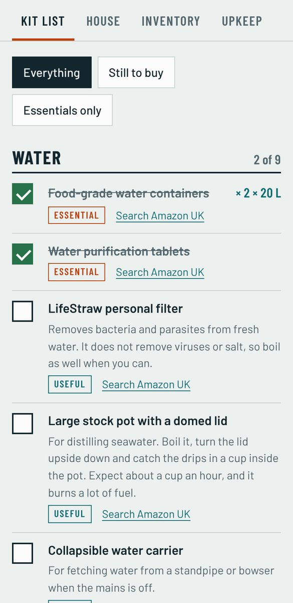
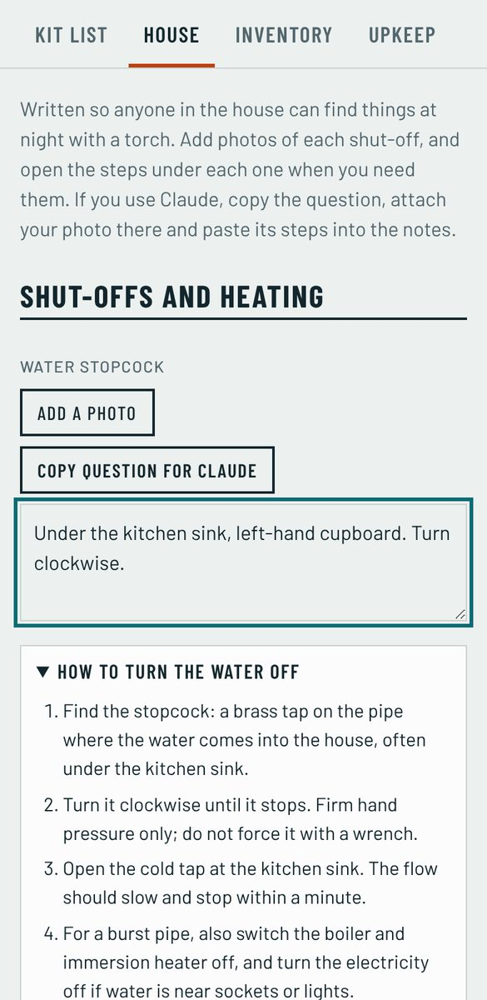

Be ready for three days without power, water or shops.
A free app and plain guides for getting a household ready. Built and tested at home on Anglesey.
Pick what has happened
The power is off
- Check your fuse box. If a switch has tripped, the fault is in your house and it is not a power cut.
- Ring 105. It is free, and tells you what is wrong and how long it may last.
- Switch off the cooker, heaters and irons so they do not come back on unattended. Leave one light on.
From the kit: head torches, a wind-up radio and charged power banks. See them in the catalogue
The app
A checklist, a picture guide to your own shut-offs, and a record of what you own. Free, with no account. Everything you enter stays on your phone.
Open the appThe catalogue
Every item in the kit, why it is there and where to find it. A price paid and an honest verdict are added as each one is bought and used.
Browse the kitThe guides
What to do in a power cut, when the taps run dry, before a storm and in a cold snap. Short enough to read by torchlight.
Read the guidesThe videos
Short films of the kit in use, so you can see how something works before you need it.
Go to videos

What the app does
- Kit list54 items in seven groups, marked essential, useful or optional. Set how many people live with you and it works out the water, food and torches.
- HousePhotos and notes for your stopcock, fuse box, fuel shut-off, boiler and heating timer, with steps for each one.
- InventoryPhotos, makes, serial numbers and values of what you own, with a running total for the insurer.
- UpkeepBoiler service, alarm tests, gutters. Log the date and it tells you when the next one is due.
- BackupOne file holds everything, photos included, to move to a new phone or keep safe.
To keep it on your phone: open it, then choose Add to Home Screen from your browser's share or menu button.
Prep guides
Each guide is the short version: what to do first, what to have in the house, and where the official advice is.
The three-day basics
Most disruptions in the UK are over within three days. If your household can manage that long without mains power, tap water or a shop, you are ready for nearly all of them.
- Water: 3 litres per person per day for drinking, so 9 litres each. More if you want to cook and wash.
- Food: three days of things you would eat anyway, some of which need no cooking, and a tin opener that works by hand.
- Light: a head torch each and spare batteries. Torches are safer than candles.
- News: a wind-up or battery radio. Mobile masts can lose power too.
- Power: two charged power banks, and a charger for the car.
- Health: a first aid kit, everyday medicines and a week of any prescriptions.
- Paper: emergency numbers written down, some cash, and copies of key documents.
The catalogue lists every item, and the app works out the quantities for your household.
A power cut
- Check your fuse box first. If one switch is down and the neighbours have lights, the fault is in your house.
- Ring 105. It is free from any phone and puts you through to the company that runs your local power lines.
- Switch off the cooker, heaters, irons and anything else that should not come back on unattended. Leave one light on so you know when power returns.
- Keep the fridge and freezer shut. A closed fridge stays cold for about four hours, a full freezer for about two days.
- Use torches, not candles. Check on neighbours who are older or unwell.
If someone in the house relies on powered medical equipment, is elderly or has very young children, join the Priority Services Register. It is free and your network operator will contact you first in a power cut.
If you have solar panels: an ordinary inverter switches off in a power cut, so the panels will not run the house unless the system was built for backup. Never plug a generator into the house wiring without a transfer switch fitted by an electrician.
No water from the taps
- Check your own stopcock is open, then ask a neighbour whether theirs is off too.
- Look at your water company's website or ring them. In a long outage they set up bottled water points and will tell you where.
- Drink your stored water first: 3 litres each per day.
- Flush the toilet with rainwater or washing-up water poured from a bucket.
Making water safe to drink
- Boiling is the surest method. Bring the water to a rolling boil, then let it cool.
- Chlorine dioxide tablets deal with bacteria and viruses and need no fuel.
- Filter straws and squeeze filters remove bacteria and parasites from fresh water. They do not remove viruses or salt.
- Seawater is never safe to drink. Distilling it works: boil it in a lidded pot with the lid upside down and collect the drips. It is slow and uses a lot of fuel, so treat it as a last resort.
A storm or flood warning
- Charge phones, power banks and torches now, and fill the flasks with hot water.
- Bring in or tie down anything loose outside. Park away from trees and walls.
- Check the flood warnings for your address and sign up for alerts.
- Move valuables, documents and medicines upstairs or onto high shelves.
- Put the grab bag by the door, and make sure everyone knows where you would meet.
- If water is about to come in, turn off the gas, electricity and water at the mains if you can reach them safely.
Do not walk or drive through flood water. Ring 999 if anyone is in danger.
The heating fails in a cold snap
- Check the boiler has power and the pressure gauge reads between 1 and 1.5 bar. Press reset once.
- If it locks out again, note the fault code and call a Gas Safe engineer, or an OFTEC engineer for oil.
- Move everyone into one room, shut the doors and close the curtains.
- Wear layers and a hat indoors. Fill hot water bottles and get the sleeping bags out.
Never bring a barbecue, camping stove or generator indoors for heat. They give off carbon monoxide, which you cannot see or smell.
Know your shut-offs
Find these three on a quiet afternoon, not in the dark with water coming through the ceiling. The app lets you photograph each one and keep the steps beside it.
- Water: the stopcock is a brass tap where the pipe enters the house, often under the kitchen sink. Clockwise is off.
- Electricity: the main switch on the fuse box is the largest one, usually red. Down is off. Do not touch it if it is wet.
- Gas: the valve is on the pipe beside the meter. Lever in line with the pipe is on; across the pipe is off.
If you smell gas: no switches, no flames, no phones indoors. Open doors and windows, get everyone out, and ring 0800 111 999 from outside.
These guides are general information for households in Great Britain. They are not a substitute for a qualified engineer, your insurer or the emergency services.
The kit catalogue
Every item in the kit and why it is there.
Shop links are plain searches on Amazon UK. This site earns nothing from them. Verdicts are only written for items we have bought and used ourselves.
Videos
Short films of the kit in use, filmed at home on Anglesey.
About
One household on Anglesey working out what it takes to be ready, and writing it down so others can use it.
How this works
The kit list started as our own shopping list. Each item goes into the catalogue with the reason it is there. Once we have bought it and used it, we add what we paid, where it came from, and whether it was worth it.
Everything here is free. There are no adverts and nobody sponsors the reviews. If that ever changes, it will say so on this page and beside every link it affects.
Your information
This website has no accounts, no cookies and no trackers. The app stores what you enter on your own phone and sends it nowhere. We cannot see it, which also means we cannot recover it, so use the app's backup button.
Get in touch
Safety
The advice here is general and written for homes in Great Britain. Gas and electrical work is for qualified engineers. In an emergency ring 999.